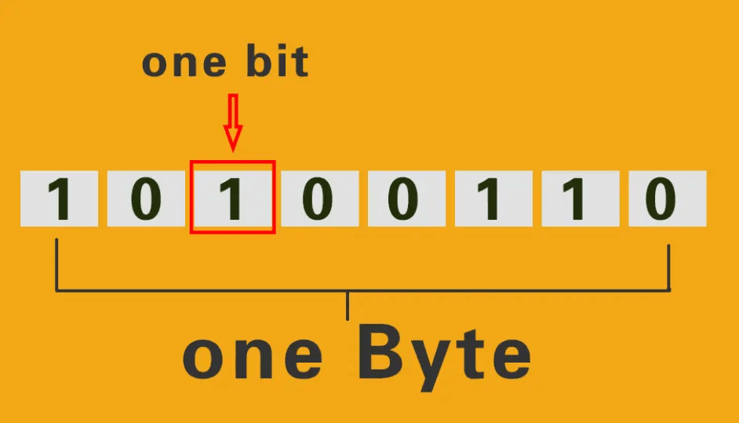

C++Primer第二章读书笔记其一
字、字节与比特

可寻址的最小内存块称为“字节”（Byte)。1Byte=8bit,即1个字节由8个二进制位（0或1）组成，故1个字节最多有2^8种状态。
存储的基本单元称作“字”（Word），它由若干字节组成。字的位数叫做字长，即cpu一次处理二进制代码的位数。
我们常说的32位/64位电脑，指的就是字长，即1Word=32/64bit。故在32位/64位电脑中，1Word=4/8Byte。
同时，字也是计算机一次处理数据的最大单位。
unsigned与补码
2.1.2在介绍“强制类型转换”的时候里有这样两条赋值语句:
unsigned char c = -1; //假设char占8比特,c的值为255
signed char c2 = 256; //假设char占8比特,c2的值未定义
似乎这下一切都解释得通了，但我还有一个问题：为什么计算机要选择补码进行存储呢？
为什么计算机选择补码？
以下内容参考知乎相关问题回答进行理解。
答案是：为了实现同一套电路的复用，使用同一套电路能同时处理加减法，简化电路复杂度。
我们顺着这个目的去想，要能够用一套电路同时处理加减法，就得将其中一种转化成另外一种进行运算。
那么如何才能做到呢？
要使思路能够推进，我们需要先引入一个数学运算的概念：取模，即取余数。
例如对于模256来说，1 % 256 = 1，且257 % 256 = 1。
很容易就可以发现，对于确定模因的取模运算来说，你给出的数据1和257没有任何区别。
图像化的理解，就可以理解成时钟，前进是加，后退是减，当指针转过一圈再前进时，又会从头开始计数。
对时钟上任一时刻来说，后退两个刻度（-2）和前进十个刻度（+10）是没有区别的。
那么回到最初的问题上，如果我们使用取模的结果作为存储对象，
那么在模因为a的时候计算b+(-c)（前提b和c都小于等于a),我们可以转化成计算b+(a-c)，
最后%a取模进行存储————(b+（-c))%a == (b+(a-c))%a，这就绕开了减法。
而在计算机中，我们把取模后的结果二进制化后称作”补码“。
就拿前面的例子来说，补码就是那个取模后的结果，对应的负数为-1，正数为255。
但这样又会出现一个问题：两个不同的数（一正一负）对应同一个取模结果。
那么要怎么知道这个结果代表哪个数呢？据汇编大佬所说，计算机内部存在一个sflag寄存器用来确定这个二进制数是不是有符号数。
如果是signed的，就把二进制数的最高位当成符号位。unsigned与signed之间的转化，也基于此。
类型的强制转化除了这种显式的场景以外，还存在算术表达式这种隐式的情况。 当一个算术表达式中既有unsigned又有int时，int会偷偷地转换成unsigned参与运算。 比如：
unsigned u = 10;
int i = -42;
std::cout << u + i << std::endl; //我们虽然没有直接给unsigned赋负值，但还是间接导致了相同的结果。